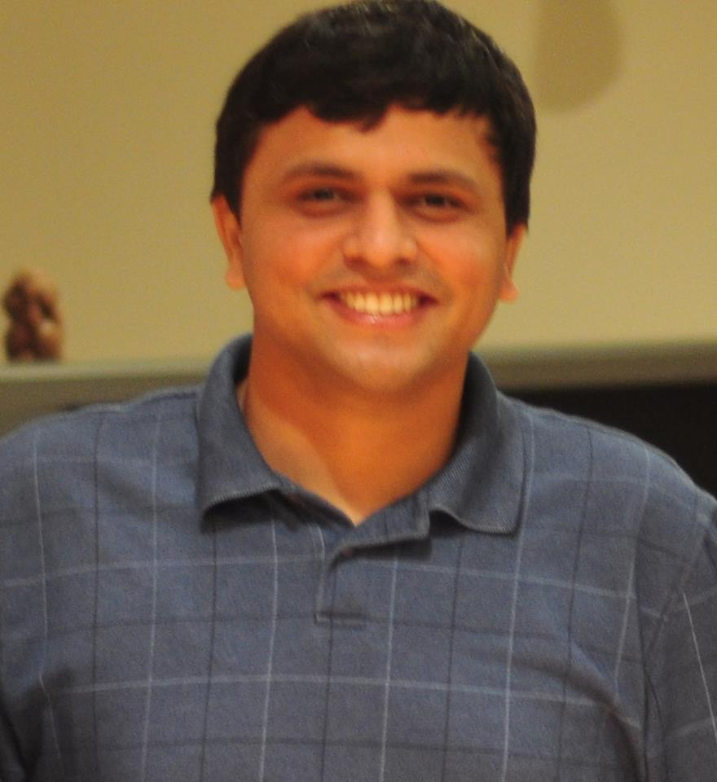

|  | Adwait JogPh.D. Candidate, Penn State UniversityContact:adwait@cse.psu.edu |
Paper accepted in MICRO-2014
Graduate Research Assistant Award, CSE Department News
Paper accepted in GPGPU 2014, co-located with ASPLOS 2014
Papers accepted in ISCA 2013, ASPLOS 2013, and PACT 2013
I am a member of High Performance Computing Lab at Penn State, where I work
with my advisor Chita Das.
I also collaborate with Mahmut Kandemir, Vijaykrishnan Narayanan,
and Yuan Xie at Penn State,
Ravishankar Iyer
at Intel Labs, and Onur Mutlu at CMU.
I was associated as an intern with NVIDIA Research in the summer of 2013,
Intel Labs in the summer of 2012, and Intel Corp. in the summer of 2011.
Before joining Penn State in Fall 2009, I completed my undergraduate studies from
NIT Rourkela, India.
My research interests lie broadly in the area of computer architecture. Primarily, I work in the area of Graphics Processing Units (GPUs). I am also interested in CPU+GPU heterogeneous architectures, emerging memory technologies, and their applicability in future computing systems. Local copies of my publications and other material related to my research is available on this webpage.
Proposed Thesis:
Design and Analysis of Thread and Memory Scheduling Techniques for Throughput Processors.
Committee Members: Chita Das (Penn State), Mahmut Kandemir (Penn State), Yuan Xie (Penn State), Ken Jenkins (Penn State), Onur Mutlu (CMU), Ravi Iyer (Intel Labs)
(MICRO 2014, to appear)
Onur Kayiran, Nachiappan CN, Adwait Jog, Rachata Ausavarungnirun, Mahmut Kandemir, Gabriel Loh, Onur Mutlu, Chita Das
Managing Concurrency in Heterogeneous Architectures,
In the Proceedings of 47th International Symposium on Micro Architecture (MICRO), Cambridge, UK, December 2014
(PACT 2014)
[PDF]
[BibTeX]
Wei Ding, Mahmut Kandemir, Diana Guttman, Adwait Jog, Chita Das, Praveen Yedlapalli,
Trading Cache Hit Rate for Memory Performance,
In the Proceedings of 23rd International Conference on Parallel Architectures and Compilation Techniques (PACT), Edmonton, Alberta, Canada, August 2014
(GPGPU@ASPLOS 2014)
[PDF]
[Talk (PPTX)]
[BibTeX]
[ACM DOI]
Adwait Jog, Evgeny Bolotin, Zvika Guz, Mike Parker, Stephen W. Keckler, Mahmut Kandemir, Chita Das,
Application-aware Memory System for Fair and Efficient Execution of Concurrent GPGPU Applications,
In the Proceedings of 7th Workshop on General Purpose Computing using GPUs (GPGPU7), co-located with 19th International Conference on
Architectural Support for Programming Languages and Operating Systems (ASPLOS), Salt Lake City, UT, March 2014
(PACT 2013)
[PDF]
[Talk (PPTX)]
[BibTeX]
Best Paper Nomination: One of the four papers nominated for the Best Paper Award.
Onur Kayiran, Adwait Jog, Mahmut T. Kandemir, Chita R. Das,
Neither More Nor Less: Optimizing Thread-level Parallelism for GPGPUs,
In the Proceedings of 22nd International Conference on Parallel Architectures and Compilation Techniques (PACT), Edinburgh, Scotland, September 2013
(ISCA 2013)
[PDF]
[Talk (PPTX)]
[BibTeX]
Adwait Jog, Onur Kayiran, Asit K. Mishra, Mahmut T. Kandemir, Onur Mutlu, Ravi Iyer, Chita R. Das,
Orchestrated Scheduling and Prefetching for GPGPUs,
In the Proceedings of 40th International Symposium on Computer Architecture (ISCA), Tel Aviv, Israel, June 2013
(ASPLOS 2013)
[PDF]
[2-page-summary (PDF)]
[Talk (PPTX)]
[BibTeX]
Adwait Jog, Onur Kayiran, Nachiappan CN, Asit K. Mishra, Mahmut T. Kandemir, Onur Mutlu, Ravishankar Iyer, Chita R. Das,
OWL: Cooperative Thread Array Aware Scheduling Techniques for Improving GPGPU performance,
In the Proceedings of 18th International Conference on Architectural Support for Programming Languages and Operating Systems (ASPLOS), Houston, TX, March 2013
(DAC 2012)
[PDF]
[Talk (PPTX)]
[Poster]
[BibTeX]
Adwait Jog, Asit K. Mishra, Cong Xu, Yuan Xie, N. Vijaykrishnan, Ravishankar Iyer, Chita R. Das,
Cache Revive: Architecting Volatile STT-RAM Caches for Enhanced Performance in CMPs,
In the Proceedings of 49th Design Automation Conference (DAC), San Francisco, CA, June 2012
(GPGPU@ASPLOS 2014), Salt Lake City, UT
[Talk (PPTX)]
Application-aware Memory System for Fair and Efficient Execution of Concurrent GPGPU Applications
(ISCA 2013), Tel Aviv, Israel
[Talk (PPTX)]
Orchestrated Scheduling and Prefetching for GPGPUs
(ASPLOS 2013), Houston, TX
[Talk (PPTX)]
OWL: Cooperative Thread Array Aware Scheduling Techniques for Improving GPGPU performance
(DAC 2012, San Francisco, CA) and (IUCRC NEXYS Workshop, Pittsburgh, PA)
[Talk (PPTX)]
[Poster]
Cache Revive: Architecting Volatile STT-RAM Caches for Enhanced Performance in CMPs
Co-Instructor, Computer Organization and Design (Fall 2014, CMPEN 331)
Co-Instructor, Computer Organization and Design (Spring 2014, CMPEN 331)
Teaching Assistant, Introduction to Computer Architecture (Spring 2010, CMPEN 431)
Teaching Assistant, Logic Design of Digital Systems (Fall 2009, CMPEN 471)
Mars on GPGPU-Sim
Mars is a MapReduce framework on GPUs. This package contains MapReduce implementations of some
applications that can take advantage of CUDA enabled GPU. More details can be viewed here.
I decided to run these applications on GPGPU-Sim, a publicly available GPU Simulator.
The tarball to help you get started can be found here. Some of these applications
are used to evaluate the proposed schemes in our ASPLOS-2013 paper. If you find this tarball useful, please cite our
ASPLOS-2013 paper (BibTeX) and Mars.
Onur Kayiran, Adwait Jog, Mahmut T. Kandemir, Chita R. Das,
Neither More Nor Less: Optimizing Thread-level Parallelism for GPGPUs,
TR-CSE-2012-006, CSE-Penn State Tech Report, Sept 2012
Adwait Jog, Asit K. Mishra, Cong Xu, Yuan Xie, N. Vijaykrishnan, Ravishankar Iyer, Chita R. Das,
Cache Revive: Architecting Volatile STT-RAM Caches for Enhanced Performance in CMPs,
TR-CSE-2011-010, CSE-Penn State Tech Report, June 2011
Reviewer, Computer Architecture Letters (CAL), 2014, 2012
Reviewer, Transcations on Computers (TC), 2013
Reviewer, Transactions on Embedded Computing (TECS), 2013
Reviewer, Transactions on Design Automation of Electronic Systems (TODAES), 2013
Expert Reviewer, DAC 2013
External Review Committee, HPCA 2013
External Review Committee, ICCD 2014, 2013
External Review Committee, MICRO 2012
On-Behalf Reviewer:
2014 (ASPLOS, ISCA, HPCA, MICRO, DATE, DAC, PACT, SBAC-PAD)
2013 (ISCA, PACT, ICCAD)
2012 (ISCA, HPCA, DAC, TACO)
Student Member of ACM, IEEE, ACM SIGARCH
Google Scholar Profile
LinkedIn Profile
DBLP Entry
PBS Useful Tricks
More PBS Tricks (Credits: Onur and Nachi)